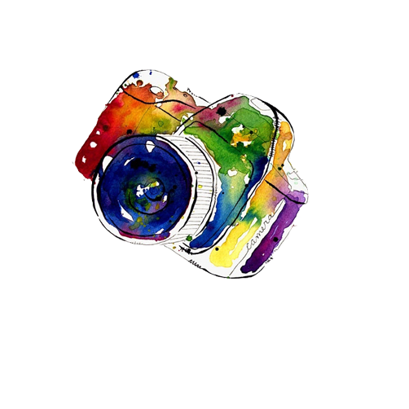
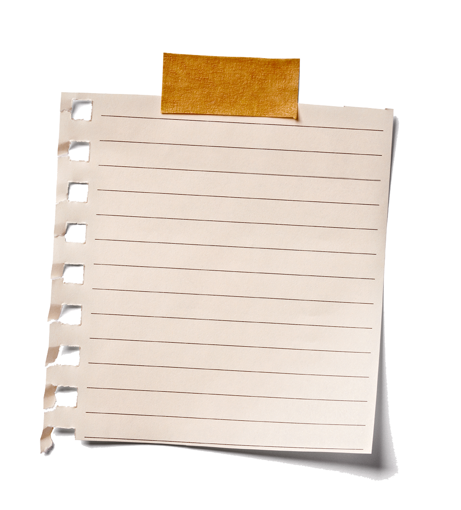
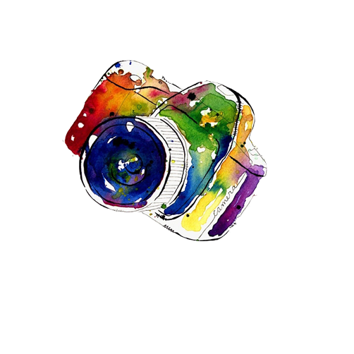
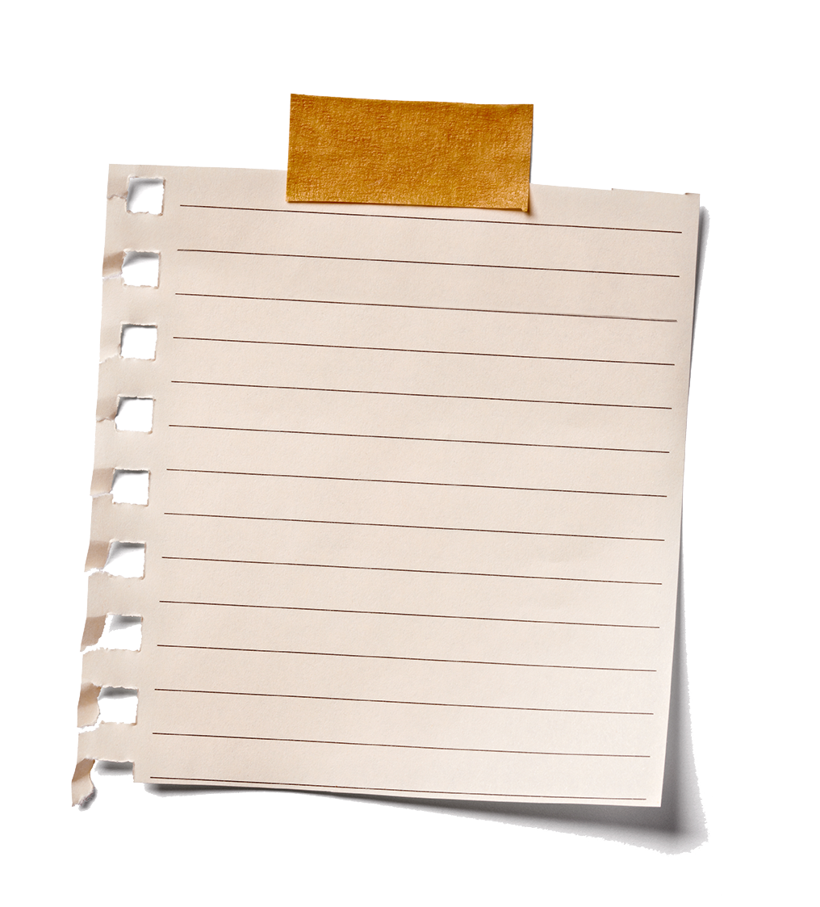
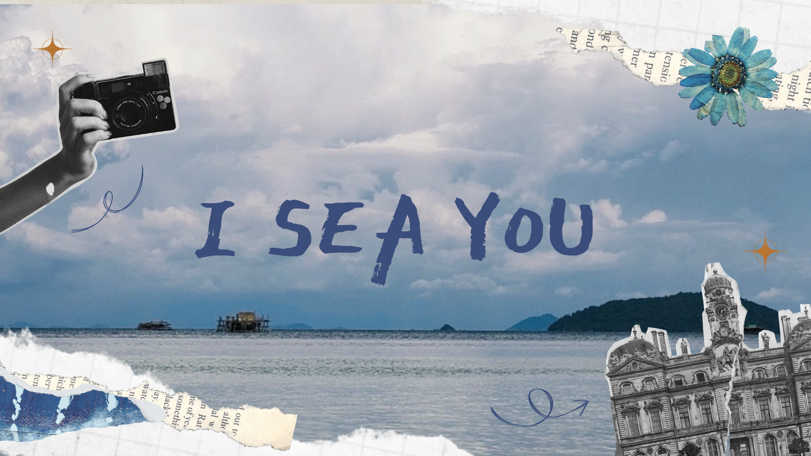

My Journal ✿
Today feels like a quiet rewind. The sunlight slipped softly through the curtains, painting warm shades across my messy desk. I opened an old notebook and saw pressed flowers, faded ink, and small scribbles that still made me smile.
Outside, clouds drifted lazily over the hills, and the air smelled like rain. Maybe life isn't about chasing storms anymore — maybe it's about learning to stand still and feel the wind again.